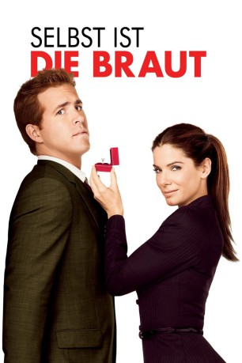

#1010 Selbst ist die Braut
Alternativ: The Proposal
 
 IMDB-Wertung: 6.7 / 10
IMDB-Wertung: 6.7 / 10  Metascore: 48
Metascore: 48 
Die erfolgreiche Lektorin Margaret Tate macht es ihrer Umwelt nicht leicht. Vor allem ihr junger Assistent Andrew Paxton hat unter ihrer Ungeduld und ihren übertriebenen Ansprüchen zu leiden. Doch dann läuft das US-Visum der Kanadierin aus. Um ihre Ausweisung aus dem Land zu verhindern, muss sie schnellstmöglich einen amerikanischen Ehemann präsentieren. Keine einfache Angelegenheit für eine allein stehende Kratzbürste. In ihrer Verzweiflung erpresst Margaret den unbedarften Andrew, sich als ihren Bräutigam auszugeben. Dass damit ihr ganzes Leben auf den Kopf gestellt wird, ahnt sie nicht. Denn bei einem Antrittsbesuch bei Andrews Eltern in Alaska wird die Schwiegertochter in spe nicht einfach nur überschwänglich empfangen. Sie haben auch eine spontane Überraschungshochzeit geplant...
Jahr: 2009
Dauer: 108 Minuten
FSK: 0
Land: USA Studio: Walt Disney Studios Motion PicturesTonspuren: DTS - ,
Untertitel: Deutsch,
Auflösung: 1080p (1920x800) Größe: 6563 MB
Genre: Komödie, Drama, Liebe
Regisseur: Anne Fletcher
Drehbuch: Peter Chiarelli
Soundtrack: Aaron Zigman
Darsteller:
 Sandra Bullock als Margaret Tate
Sandra Bullock als Margaret Tate Ryan Reynolds als Andrew Paxton
Ryan Reynolds als Andrew Paxton Mary Steenburgen als Grace Paxton
Mary Steenburgen als Grace Paxton Craig T. Nelson als Joe Paxton
Craig T. Nelson als Joe Paxton Betty White als Grandma Annie
Betty White als Grandma Annie Denis O'Hare als Mr. Gilbertson
Denis O'Hare als Mr. Gilbertson Malin Akerman als Gertrude
Malin Akerman als Gertrude Oscar Nuñez als Ramone
Oscar Nuñez als Ramone Aasif Mandvi als Bob Spaulding
Aasif Mandvi als Bob Spaulding Michael Nouri als Chairman Bergen
Michael Nouri als Chairman Bergen Michael Mosley als Chuck
Michael Mosley als Chuck Dale Place als Jim McKittrick
Dale Place als Jim McKittrick- Kortney Adams als Colden Books Receptionist
- Jerrell Lee Wesley als Jordan
 Gregg Edelman als Lead Counsel Malloy
Gregg Edelman als Lead Counsel Malloy- Kate Lacey-Kiley als Party Guest
- Mary Linda Rapelye als Executive Secretary
 Anne Fletcher als Jill
Anne Fletcher als Jill Jodie Brunelle als Engagement Party Guest , uncredited
Jodie Brunelle als Engagement Party Guest , uncredited Chemi Che-Mponda als African Immigrant at INS Office , uncredited
Chemi Che-Mponda als African Immigrant at INS Office , uncredited John Franchi als Taxicab Driver , uncredited
John Franchi als Taxicab Driver , uncredited- Dan Griffin als Businessman / Pedestrian on Sidewalk , uncredited
- Joseph Guglielmo als Gay Friend , uncredited
 London Hall als Wedding and Reception Guest , uncredited
London Hall als Wedding and Reception Guest , uncredited Frankie Imbergamo als Int. Airline Passenger , uncredited
Frankie Imbergamo als Int. Airline Passenger , uncredited Dan Marshall als Lawyer at Publishing Company , uncredited
Dan Marshall als Lawyer at Publishing Company , uncredited Niecy Nash als Stewardess , uncredited
Niecy Nash als Stewardess , uncredited- Annie Rohling als INS Employee , uncredited
 Rich Skinner als New York Cab Driver , uncredited
Rich Skinner als New York Cab Driver , uncredited- Ylian Alfaro Snyder als Immigrant at INS Office , uncredited
- Jessica J. Stowes als Airline Passenger , uncredited
 Stream als Indian Immigrant at INS Office , uncredited
Stream als Indian Immigrant at INS Office , uncredited Uzimann als Pedestrian , uncredited
Uzimann als Pedestrian , uncredited- Larry Vigus als Party Guest , uncredited
- Adam Zalt als Businessman , uncredited
- Alicia Hunt als Coffee Barista
- Alexis Garcia als Immigration Clerk
- Chris Whitney als Medivac Pilot
- Phyllis Kay als Mrs. McKittrick
- Gene Fleming als Store Owner
- B. Johnson als Guy in Office
- Cindi Alex als Wedding Guest , uncredited
- Ellen Becker-Gray als Woman Buying Coffee , uncredited
- Raymond Michael Bell als Shopper , uncredited
- Brian Bradbury als Airline Crew , uncredited
- John J. Burke als Airline passenger , uncredited
- Desiree April Connolly als Office Worker , uncredited
- Diane Curran als 1st Class Airline Passenger , uncredited
- Eric Ferraz als Immigrant at INS Office , uncredited
- Shawn Fogarty als Alaska Plane Passenger , uncredited
Datei: X:\2009(N-Z)\Selbst ist die Braut (2009, FSKo.Al., 1920x800).mkv seit 05.05.2015
Festplatte: HD 2009(G-Z)-2010(A-F)
 Es gibt insgesamt 99 Filme in der Gruppe '2009(N-Z)'
Es gibt insgesamt 99 Filme in der Gruppe '2009(N-Z)'